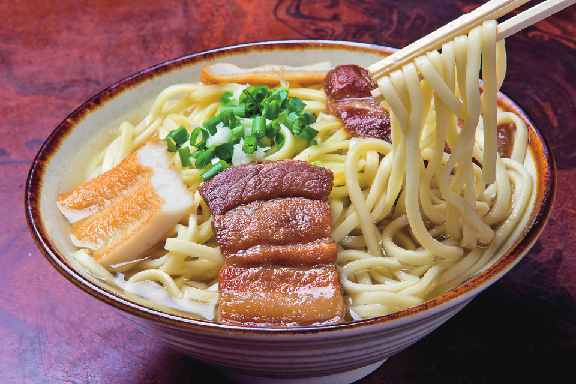
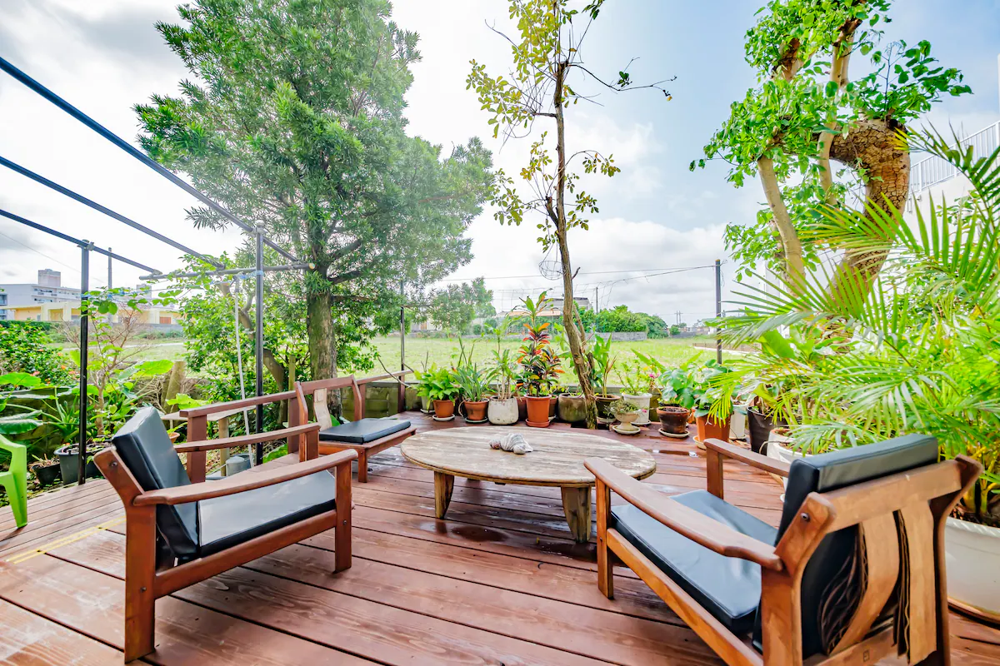
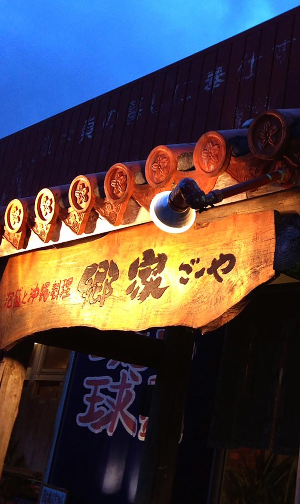
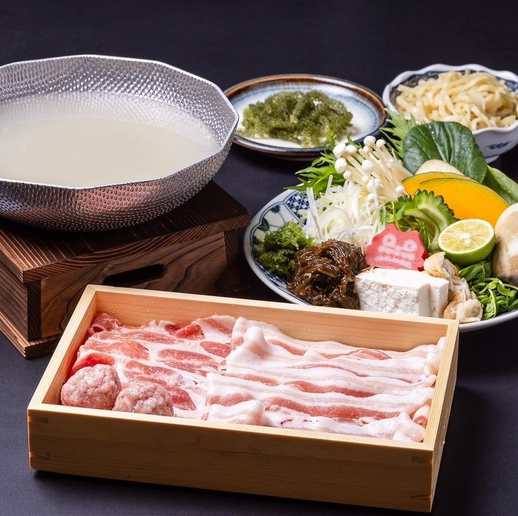
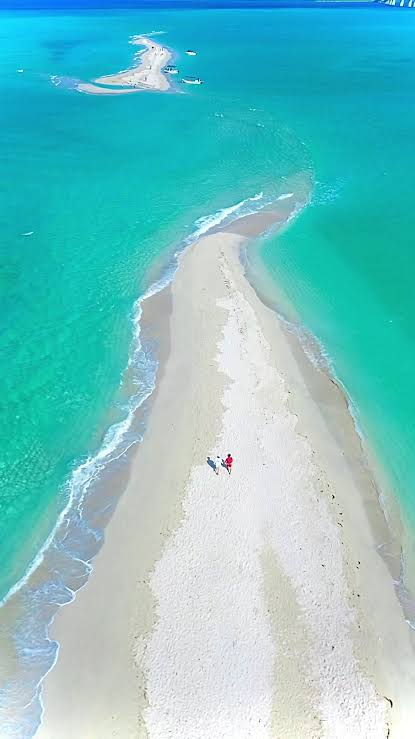

🛫
07:00頃 / 09:30頃
セントレア発 → 宮古島着
朝一便でセントレアを出発。9:30頃に宮古島空港へ到着します。航空券 検討中
海遊びは前浜＋八重干瀬。
絶景と食事で楽しむ、2泊3日の宮古島。
旅行まであと -- 日
DAY1の出発からDAY3の帰路まで、太陽の動きにあわせて旅の流れをひと目で。
前浜ビーチで海遊び、宮古そばを食べて、オープンカーで伊良部大橋と17ENDへ。夜は郷家で乾杯。
朝一便でセントレアを出発。9:30頃に宮古島空港へ到着します。航空券 検討中
8人乗りミニバン1台＋オープンカー1台を受け取ります。料金 検討中

海遊びのあとは宮古そばでお昼ごはん。


日本最大級のサンゴ礁「やびじ」でシュノーケリング。潮位・海況・ツアー時間を最優先に調整します。
午前は八重干瀬ツアー、夜はアグー豚など沖縄料理でしっかり食べます。
宿でゆっくり朝ごはん。
潮位・海況・出航時間・料金は最新情報を確認して確定します。
ツアー後にランチ休憩。
海遊びの疲れを癒やしてから、街で買い物や散策を楽しみます。

BBQは必須ではなく、アグー豚をはじめとした沖縄料理を予定。
2日目の夜は宿で静かに過ごします。
午前は幻の砂浜ユニの浜で景色を楽しみ、お土産を買ってから空港へ。
3日目の朝食。
CALM Houseをチェックアウトします。

干潮時にだけ現れる、宮古島を代表する幻の砂浜。ボートで上陸して最後の絶景を楽しみます。
最後のランチ。
市街地でお土産を買います。
2台とも返却します。
夕方〜最終便を希望。航空券 検討中
確定情報と予想（仮）を分けて管理します。決まったら随時更新してください。
現在は友人に旅行のイメージを共有する仮版です。正式版では各スポットの写真、航空便、宿泊料金、レンタカー、八重干瀬ツアー、1人あたり費用、持ち物、旅のしおりを追加していきます。 料金や予約状況は最新情報を確認し、確定情報と予想（仮）を分けて表示します。